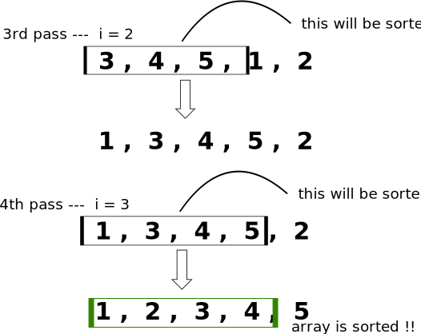

Insertion Sort
Array → 5 , 3 , 4 , 1 , 2 [Partially sorting the array]
For every index, put that index element at the correct index of LHS.


import java.util.Arrays;
public class Insertion {
public static void main(String[] args) {
int[] arr = { 3, 4, 5, 2, 1 };
insertion(arr);
System.out.println(Arrays.toString(arr));
}
static void insertion(int[] arr) {
for (int i = 0; i < arr.length - 1; i++) {
for (int j = i + 1; j > 0; j--) {
if (arr[j] < arr[j - 1])
swap(arr, j, j - 1);
else
break;
}
}
}
static void swap(int[] arr, int first, int second) {
int temp = arr[first];
arr[first] = arr[second];
arr[second] = temp;
}
}
Time complexity:
- Worst case → O(n2)
- [ descending sorted ]
- Best case → O(n)
- [ already sorted ]
Why to use insertion sort ?
- Adaptive → steps get reduced if array is sorted
- [ i.e, no of swaps are reduced as compared to bubble sort ]
- Stable Sorting algorithm
- Used for smaller values of n
- works good when array is partially sorted
- it takes part in hybrid sorting algorithm
- works good when array is partially sorted